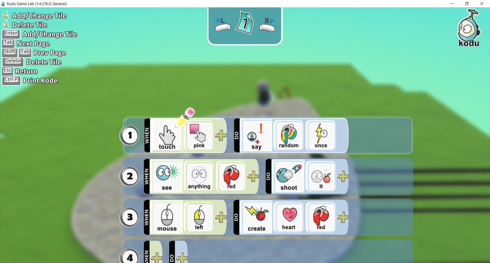
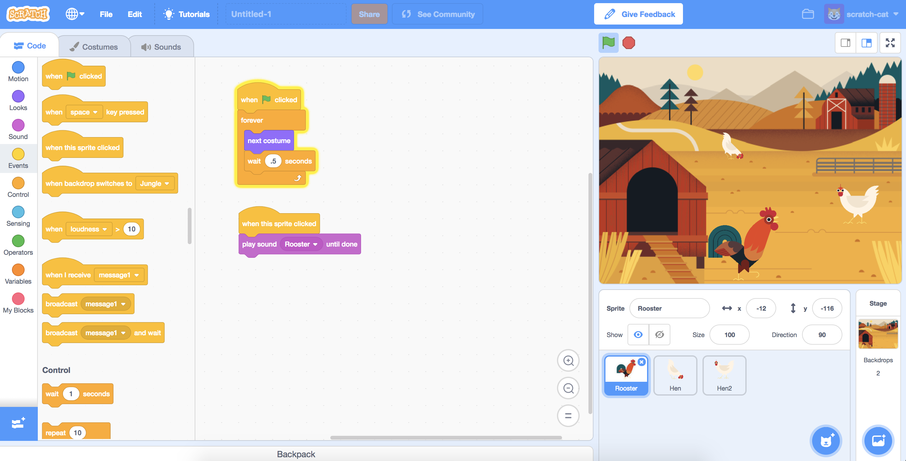

I began my coding journey with an idea:
Hey, games are pretty cool. But they could be better.
(Of course, high ambitions for a young me. No way I could improve on them.) Sinjid (by Krin and others,
credit where credit's due), in particular, was the first game where I had this thought.
This is where my interest in coding started, and it was the reason why I went into CS in the first place.
A picture from the game Sinjid.
~2013-2014?: Kodu

A screenshot of programming with Kodu.
My first ACTUAL experience in coding was with Kodu
(I think, memory's fuzzy.) I might've experimented with Scratch earlier, but this was the first time I made
anything meaningful with my abilities. I had a few little fun experiences, making racing games,
"Super soldier simulators," (AKA be an invincible motor bike thing and decimate hordes of NPCs,)
one failed attempt to create Whack-a-mole, and a whole bunch of other stuff I'm probably forgetting.
I never made anything too complicated, with behavior of objects relegated to button inputs and
if statement conditionals that controlled aspects of the objects' behaviors. I rarely, if ever, used multiple
of the Kodu pages that were available for a single entity. (In case you need a refresher, a page allowed
for a completely separate section of code, so for example if a certain condition was fulfilled you could
have the entity switch to a different page with different code, and it would act completely differently.)
2016-2018: Scratch
Scratch is where I start to get okay. I first got into
it joining a coding club in 6th grade. Heretofore, I've never been this close to actual coding.
Scratch, while drag and drop, functioned similarly to an actual coding language. My first game was simple,
just rotate a dude in the middle to aim and shoot at witches flying in from the edges of the screens.
Probably not that much more complicated than my Kodu projects. But then I started making progress.
I started experimenting with various types of games: shooters, mazes, top-down, QTE-esque stuff, etc.
Around this time, I went into 7th grade, and took a coding class, which focused on Scratch for the first Semester.
Lots of bugs and stuff along the way, had to deal with making the art myself (which sucked - both the art
and the process of making it), but I was learning more and more with every block dragged and every mistake
made. Soon, I tried to replicate one of the greats of Scratch, Will_Wam, and make a platformer.
And I failed miserably!
But with some tutorials from another great Scratcher, griffipatch, I was able to make my first rudimentary
platformer.
This was way beyond what I had to deal with in Kodu. Kodu included a 3D physics engine;
here I was doing everything myself.
I made published one final Scratch project: a unique platformer, where instead of controlling the player with
WASD or the arrow keys, you controlled it with three modes. Each one continuously performed an action;
move left, move right, or jump. I got the opportunity to show it off at STEM night, which was rather fun.
In particular, watching my friends struggle to complete even the first level, while I breezed through the
entire game was entertaining.
I tried to make one final project: A shooter game with upgrades, a store, (relatively) complicated gameplay,
and even a rudimentary way to save progress. However, I ran into too many bugs and the project died. So ends
my Scratch career.

A screenshot of using Scratch's method of programming.
A screenshot of the starting screen of a game I made. Click the image to be taken to the game.
2017-now: Various Shenaniganery
The Java logo, the language I'm most comfortable with.
HTML and CSS, languages I've been working with recently.
The Python logo, a language I've been working with recently (and plan to use for ML).
This overlaps with my Scratch career. Sometime during
7th grade, I completed the 5 units of the TJ intro to CS course (or whatever it was called). So that was fun!
(No it wasn't)
Also during 7th grade, in the second Semester of my coding class we moved onto a program whose name I forget. It
utilized drag and drop functions like Scratch, but instead of that being the only option, you could also type in
the code you wanted. I believe it used Python? I'm not sure. Anyways, the blocks you dragged in turned into snippets
of Python code, so that's how that worked.
In 8th grade, I took a robotics course. We worked with a language called RobotC that was basically just Java, as far
as I could tell. Nothing too complicated though, as without an array of complicated sensors the inputs I could work with
were limited, and also there was no way to make custom commands, etc. etc.
In 9th grade, I took a Python course for math. Nothing too special, although I did make a neat little picture at one point
using the Python Turtles for a Christmas project. I didn't learn much, but it was interesting.
Finally, here. At some point I picked up a little HTML, which is how I know what I'm doing here, making this website.
Don't exactly remember when that happened. I also did a Python course, learning some neat stuff like LIBRARIES EXIST and
lambda functions, as well as list comprehension. Neat!
Looking into the future a bit, I plan to pick up some ML. Not sure what's after that other than a CS major when I go to college,
but yeah!